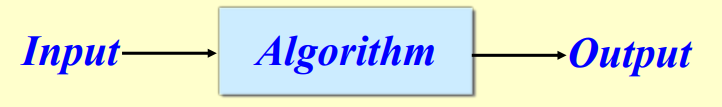

XX Min
XX Min Análisis de algorítmos.
- Introudcción
- Conceptos generales
- Tiempo de ejecución de algoritmos
- Notación asintótica
- Análisis de algoritmos no recursivos
- Análisis de algoritmos recursivos
- Casos de estudio
Introducción
¿Qué es un algoritmo?
Def. Informal: Una herramienta para resolver un problema computacional bien especificado.
Def. Formal: Máquiina de Turing que siempre se detiene.

Ejemplo: ordenación.
- entrada: Secuencia de numeros
- salida: permutacion ordenada de la entrada
- problemas: correccion, eficiencia, almacenamiento, etc.
Entonces, un algoritmo es una secuencia de instrucciones inequñivocas para resolver un problema, y sus propiedades son:
- - Finito: El algoritmo debe terminar eventualmente
- - Completo: Siempre dar una solución cuando exista
- - Correcto: Siemrpea dar una solución correcta
En pocas palabras, un algoritmo informático es un metodo detallado paso a paso para resolver un problema mediante el uso de un ordenador.
Un algoritmo debe resolver correctamente el problema en cuestión. Debe ser eficaz.
Para que un algoritmo sea una solución aceptable a un problema, también debe ser eficiente, es decir, debe dar una solución con un uso 'razonable' de los recursos (normalmente nos centramos en el tiempo).
Eficiente = Se ejecuta en tiempo polinómico.
Efictividad ≠ Eficiencia.
Es de suma importancia poder seleccionar el algoritmo más eficiente par aun problema dado.
Conceptos generales.
Puede haber muchos algoritmos para resolver el mismo problema para una entrada arbitrariamente grande.
Podemos comparar diferentes algoritmos a través de su complejidad.
La complejidad de un algoritmo es una función que describe la eficiencia del algoritmo en términos de cantidad de datos que el algoritmo debe procesar.
¿Cómo determinamos las complejidades?
A través del análisis de algoritmos.
En la ciencia de computación, el análisis de algoritmos es la determinación de la cantidad de recursos ( como el tiempo y el almacenamiento) necesarios para ejecutarlos.
¿Por qué analizar algoritmos?
Para elegir el más eficiente de entre varios algoritmos posibles para resolver el mismo problema.
¿Es el mejor tiempo de ejecución posible para un problema razonablemente finito para fines prácticos?
¿Es el algoritmo óptimo (mejor en algún sentido)? ¿Es posible algo mejor?
¿Cómo analizar algoritmos?
- 1. Empíricamente (experimentalmente).
- 2. Teóricamente.
Análisis empírico.
Ejecutar el algortimo para varios tamaños de entrada y medir el tiempo de ejecución.
| Size (n) | T (seconds) |
| 250 | 0.0 |
| 500 | 0.0 |
| 1000 | 0.1 |
| 2000 | 0.8 |
| 4000 | 6.4 |
| 8000 | 50.1 |
Análisis de datos.
· Hipótesis: La variación del tiempo en relación con el tamaño debe seguir este patrón, proponer un patrón, por ejemplo: Tiempo = a * Tamaño + b
· Validación: Usar el análisis de registros para comprobar la validez de la hipótesis con los datos.
· Refinar la hipótesis: Si es necesario, reevaluar la hipótesis y validad de nuevo.
Sin embargo, el enfoque más general (independiente de herramientas y máquinas) es el teórico.
Análisis teórico
El análisis teórido de algoritmos es una parte importante de una teoría de complejidad computacional más amplia, que proporciona estimaciones teóricas de los recursos necesarios para cualquier algoritmo que resuelva un problema computacional dado.
Estas estimaciones proporcionan una visión de las direcciones razonables en la búsqueda de algoritmos eficientes.
En el análisis teórico de algoritmos es común estimar su complejidad en el sentido asintótico, es decir, estimar la función de complejidad para una entrada arbitrariamente grande ( n → ∞)
¿Cómo determinamos la complejidad de un algoritmo?
paso 2. Nos centramos en el comportamiento asintótico de la expresión anterior.
paso 3. Limitamos la tasa de creciemiento de la función resultante anterior usando notación asintótica.
¿Cómo agrupamos las entradas?
Por tamaño, n.
¿Qué queremos decir con el tamaño de una entrada?
Depende del programa.
- Integer input → Nº de dígitos
- Set input → Nº de elementos en el conjunto
- Text string → Nº de caracteres
- Generalmente obvio